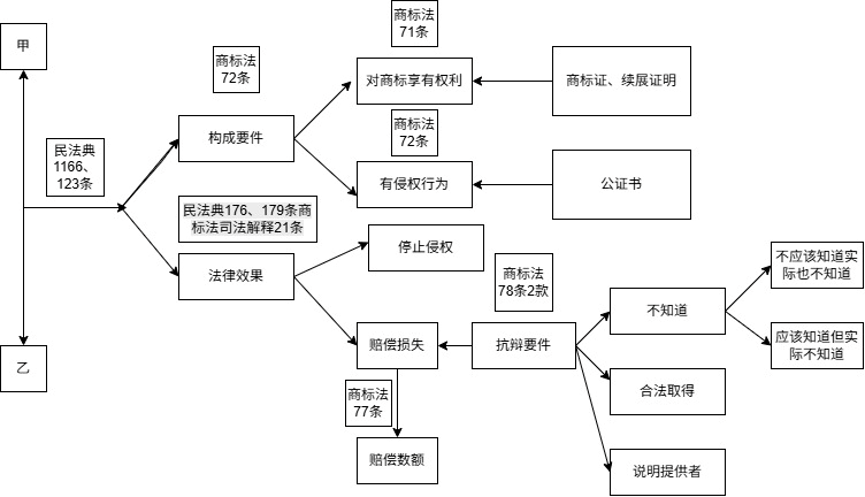

请求权基础规范
核心问题：谁可以向谁请求什么？
主要功能：建立请求权及其构成要件。
审查方向：原告是否完成权利发生事实的主张与证明。
课程讲义
从规范识别、法律解释到案件论证
第一章 法律规范与案件分析的基本结构
法学方法论视角下的规范结构说明
本文说明完全性法条与四类不完全性法条的定义、规范功能和案件分析方法。核心结论是：裁判所适用的完整规范往往不是某一个孤立条文，而是以完全性法条为主干，再由定义性、补充性、准用性、拟制性法条以及抗辩或限制规范共同组成。
分类说明：不同学者对不完全性法条的分类并不完全一致。本文依照“定义性、补充性、准用性和拟制性”四分法展开，并在必要处提示相邻概念。
法条是法律文本的基本编排单位，通常以“第×条”标示；一条之内分为若干自然段时，各自然段称为“款”；一款之内需要分列若干情形时，通常以“（一）”“（二）”等标示为“项”。款一般按照自然段计数，而不是按照句号计数；项依附于条或者款，不能脱离其上位层级理解。
《民法典》第179条第1款列举承担民事责任的方式，其中第1项为“停止侵害”，第8项为“赔偿损失”；第2款规定惩罚性赔偿依照法律规定适用；第3款规定各种责任方式可以单独适用，也可以合并适用。
1. “第一百七十九条”整体是一个条。
2. 从“承担民事责任的方式主要有”开始的第一自然段是第1款；从“法律规定惩罚性赔偿的”开始的是第2款；最后一个自然段是第3款。
3. 第1款内部以“（一）”至“（十一）”分列的内容是项，例如“停止侵害”应引用为第179条第1款第1项，“赔偿损失”应引用为第179条第1款第8项。
读图要点：“条”是完整编号单位；“款”按照条内自然段依次计算；只有第1款使用“（一）”至“（十一）”分列内容，因此第1款下设11项，第2款和第3款均不分项。
法条是可见的文字载体，法律规范则是从一个或数个法条中解释、提炼和组合出的行为标准或裁判标准。因此，不能把“一个条文”等同于“一个规范”：一个法条可能包含数个规范，一个具体案件所需的完整裁判规范也可能分散在数个法条中。法院真正适用的，通常是经过解释和组合形成的规范，而不是孤立的条文编号。
完整规范的基本结构：如果构成要件 T 成立，则发生法律效果 R。
例如，《民法典》第236条在同一个法条中规定了两个可以分别适用的请求权基础：
《民法典》第236条：妨害物权或者可能妨害物权的，权利人可以请求排除妨害或者消除危险。
| 请求权基础 | 构成要件 | 连接词 | 法律效果 |
|---|---|---|---|
| 排除妨害请求权 | 原告享有物权；被告正在实施无权妨害；妨害具有持续性或者现实存在 | 可以请求 | 被告排除现实妨害，恢复物权的圆满状态 |
| 消除危险请求权 | 原告享有物权；被告的行为或状态对该物权形成具体、现实的妨害危险；损害或妨害尚可预防 | 可以请求 | 被告采取措施消除危险，防止妨害发生 |
例如，他人持续占用业主共有通道、妨碍权利人正常通行，可能成立排除妨害请求；相邻建筑物上的构件已经严重松动、随时可能坠落损害房屋，则可能成立消除危险请求。两种请求都以物权保护为目的，但所针对的事实状态不同，裁判主文的内容也不同。
因此，第236条虽然在文本上只是一个法条，却可以还原为两个独立的规范命题：其一，“现实妨害物权”的构成要件连接“排除妨害”的法律效果；其二，“存在具体妨害危险”的构成要件连接“消除危险”的法律效果。这正说明判断规范数量不能只数法条编号，而应观察条文中存在多少组可以独立适用的构成要件与法律效果。
例如，甲过失损坏乙的设备，乙请求赔偿财产损失。要形成可供裁判的具体规范，通常需要组合《民法典》的数个条文：第1165条第1款规定一般过错侵权责任的成立，第179条第1款第8项明确赔偿损失是承担民事责任的方式，第1184条规定财产损失的计算标准。
组合后的裁判规范可以表述为：行为人因过错侵害他人财产并造成损害的，应当承担赔偿责任；财产损失按照损失发生时的市场价格或者其他合理方式计算。
第1165条第1款在抽象层面已经具有构成要件与法律效果的基本结构，属于完全性法条；但要回答具体案件中“以何种方式承担责任、赔偿多少”等问题，还必须结合第179条和第1184条。由此可见，完全性法条并不意味着其可以脱离其他规范独立完成全部裁判。
区分法条与法律规范，能够防止“找到相关条文即完成法律适用”的误区。案件分析应先从诉讼请求出发确定所需法律效果，再寻找请求权基础或责任规范，分解构成要件，检索定义、责任方式、责任范围、抗辩和举证责任等辅助规范，最后把分散条文组合成完整的大前提并进行事实涵摄。完全性法条与不完全性法条的区分，正是服务于这一规范寻找与组合过程。
完全性法条是基本同时规定法律效果的构成要件、法律效果本身以及二者规范性联系的法条。它通常可以直接充当请求权基础、责任成立依据，或者权利产生、变更和消灭的基本依据。
《民法典》第1165条第1款：行为人因过错侵害他人民事权益造成损害的，应当承担侵权责任。
该款以过错侵害、民事权益受侵害和损害等事实作为构成要件，以承担侵权责任作为法律效果。因果关系虽未以独立短语表述，但可以从“因……造成损害”的规范结构中解释出来。
提供请求权或责任成立的基本依据。
确定需要证明和评价的主要构成要件。
为案件事实的涵摄和裁判结论建立逻辑主干。
案件分析应从当事人的诉讼请求出发，寻找能够产生所请求法律效果的完全性法条，再把条文拆解为可以逐项判断的构成要件。例如，一般侵权请求需要依次审查侵害行为、受保护的民事权益、损害、因果关系和过错。
“完全”只表示条文具有基本的要件与效果结构，不表示条文内容绝对清楚，也不表示可以脱离其他法条适用。即使找到完全性法条，仍可能需要定义、责任范围、免责、抗辩和举证责任等规范共同完成裁判。
《反不正当竞争法》第22条第1款：经营者违反本法规定，给他人造成损害的，应当依法承担民事责任。
该款以“经营者违反本法规定并给他人造成损害”为构成要件，以“承担民事责任”为法律效果，并以“应当”建立二者之间的规范性联系，因此具有完全性法条的基本结构。在仿冒混淆、商业诋毁或者侵犯商业秘密案件中，它可以作为民事责任成立的规范主干。
不过，“违反本法规定”仍须结合《反不正当竞争法》关于具体不正当竞争行为的条文予以充实，责任方式和赔偿数额也可能需要结合《民法典》第179条以及《反不正当竞争法》第22条后续各款确定。这再次说明：完全性法条能够提供裁判规范的主干，但未必包办全部裁判问题。
不完全性法条本身没有完整规定构成要件和法律效果，通常不能单独形成裁判依据，而要与其他条文结合后发挥作用。它们并非无效或次要条文，而是承担解释概念、补充规范内容、指引适用其他规则或者改变特定事实法律评价等功能。
定义性法条对其他法条使用的法律概念、术语或者类型作出界定。它主要具体化构成要件，为事实能否归入某个法律概念提供判断标准，但一般不独立规定最终法律效果。
《民法典》第180条第2款：不可抗力是不能预见、不能避免且不能克服的客观情况。
该款界定“不可抗力”，但不能单独推出当事人一定免责。法律适用者还要结合第180条第1款以及合同责任、侵权责任中的具体规定，判断是否免责、免责范围以及当事人是否履行通知和减损义务。
当一方主张某事件属于不可抗力时，分析者应分别核对不能预见、不能避免、不能克服和客观情况等要素，并审查该事件与不能履行或损害之间的因果关系。定义性法条在这里发挥要件具体化功能，而不是直接承担请求权基础功能。
《中华人民共和国专利法》第二条
本法所称的发明创造是指发明、实用新型和外观设计。
发明，是指对产品、方法或者其改进所提出的新的技术方案。
实用新型，是指对产品的形状、构造或者其结合所提出的适于实用的新的技术方案。
外观设计，是指对产品的整体或者局部的形状、图案或者其结合以及色彩与形状、图案的结合所作出的富有美感并适于工业应用的新设计。
第2条界定了“发明创造”及其三个法定类型。分析专利授权、确权或者侵权案件时，首先要判断当事人所主张的客体属于发明、实用新型还是外观设计，因为不同类型在保护对象、授权条件、保护范围和侵权比对方法上并不相同。该条只是提供分类和概念边界，不能单独推出应当授予专利权或者被告构成侵权，仍须与授权条件、权利保护范围和侵权责任规范结合。
补充性法条对其他规范尚未完整规定的构成要件、责任方式、赔偿范围、计算标准或者履行方法作进一步充实。主法条解决责任是否成立，补充性法条往往继续解决成立后承担什么责任以及责任范围有多大。
例如，《民法典》第1165条确立一般过错侵权责任，第1184条进一步规定侵害他人财产时财产损失的计算方法，第179条则列举承担民事责任的主要方式。这些条文组合后，才能从责任成立推进到裁判内容。
2026年修订《商标法》第77条是补充性法条的典型例子。第72条解决哪些行为构成侵犯注册商标专用权，第77条则以侵权和赔偿责任已经成立为前提，继续回答“赔偿按照什么顺序计算”“证据由谁掌握时如何处理”“无法计算时如何确定法定赔偿”“合理维权开支是否计入”以及“侵权商品和生产材料如何处置”等问题。
《中华人民共和国商标法》第七十七条
侵犯注册商标专用权的赔偿数额，按照权利人因被侵权所受到的实际损失或者侵权人因侵权所获得的利益确定；权利人的损失或者侵权人获得的利益难以确定的，参照该商标许可使用费的倍数合理确定。对故意侵犯注册商标专用权，情节严重的，可以在按照上述方法确定数额的一倍以上五倍以下确定赔偿数额。
人民法院为确定赔偿数额，在权利人已经尽力举证，而与侵权行为相关的账簿、资料主要由侵权人掌握的情况下，可以责令侵权人提供与侵权行为相关的账簿、资料；侵权人不提供或者提供虚假的账簿、资料的，人民法院可以参考权利人的主张和提供的证据判定赔偿数额。
权利人因被侵权所受到的实际损失、侵权人因侵权所获得的利益、注册商标许可使用费难以确定的，由人民法院根据侵权行为的情节判决给予五百万元以下的赔偿。
赔偿数额还应当包括权利人为制止侵权行为所支付的合理开支。
人民法院审理商标纠纷案件，应权利人请求，对属于假冒注册商标的商品，除特殊情况外，责令销毁；对主要用于制造假冒注册商标的商品的材料、工具，责令销毁，且不予补偿；或者在特殊情况下，责令禁止前述材料、工具进入商业渠道，且不予补偿。
假冒注册商标的商品不得在仅去除假冒注册商标后进入商业渠道。
| 条款内容 | 补充对象 | 案件分析中的作用 |
|---|---|---|
| 第1款前段 | 赔偿计算顺序 | 以实际损失或者侵权获利为基本方法；二者难以确定时，再参照商标许可使用费倍数。分析者应当说明采用何种计算路径以及前一层级为何不能确定 |
| 第1款后段 | 惩罚性赔偿 | 在故意侵权且情节严重时，以依法确定的基数适用一倍以上五倍以下的倍数。故意、严重情节、计算基数和倍数均需分别论证 |
| 第2款 | 证据妨碍规则 | 权利人已经尽力举证，而关键账簿、资料主要由侵权人掌握时，法院可以责令提供；侵权人拒绝提供或提供虚假资料的，可以参考权利人的主张和证据确定数额 |
| 第3款 | 法定赔偿 | 实际损失、侵权获利和许可使用费均难以确定时，法院根据侵权行为的性质、期间、后果、商标声誉、主观状态等案件情节，在五百万元以下确定赔偿 |
| 第4款 | 合理开支 | 将调查取证费、公证费以及符合条件的律师费等制止侵权的合理支出纳入赔偿范围，但仍需审查真实性、必要性、关联性和金额合理性 |
| 第5款、第6款 | 责任实现与侵权物品处置 | 规定假冒商品、制造材料和工具的销毁或退出商业渠道。该部分不是赔偿计算规则，却补充了商标侵权责任如何具体实现 |
第77条不能单独回答被告是否构成侵权、是否应当对原告承担赔偿责任。适用该条以前，仍须依据商标权范围规范、侵权行为规范和赔偿请求权基础完成责任成立判断。因此，它在商标侵权案件中主要属于责任范围和责任实现的辅助规范，也属于典型的不完全性法条。
与综合案例的连接：在本章商标案例中，甲提交公证费、律师费材料，只能直接对应第77条第4款的合理开支；若甲不能证明实际损失、乙的侵权获利或可参照的许可使用费，并不意味着赔偿请求当然驳回，法院还应审查是否适用第3款法定赔偿。乙提出合法来源防御时，则应先审查第78条第2款是否阻止侵权损害赔偿的法律效果，再判断停止侵权和合理开支等其他责任。
时际说明：第77条属于2026年修订《商标法》，自2027年1月1日起施行；在此之前，2019年修正《商标法》第63条承担基本对应的规范功能。具体案件应依被诉行为发生时间和相关时际规则确定适用文本。
案件分析应区分责任成立、责任范围和责任实现三个层次。认定被告构成侵权，并不当然意味着原告主张的全部金额都应获得支持。还应根据补充性规范审查可赔偿损失、计算基准、证据妨碍、法定赔偿、惩罚性赔偿、合理开支以及侵权物品的处置方式。
准用性法条不在本条中重复规定完整规则，而是指示法律适用者参照其他条文处理。常见表述包括“参照适用”“准用”和“比照处理”。它可以减少立法重复，并保持相似法律关系处理上的协调。
《民法典》第646条：法律对其他有偿合同有规定的，依照其规定；没有规定的，参照适用买卖合同的有关规定。
《著作权法》第12条第3款：与著作权有关的权利参照适用前两款规定。
该款没有重新规定邻接权主体的权利归属证明和登记规则，而是把本条前两款关于署名及相应权利推定、作品登记的规则，引入“与著作权有关的权利”领域。适用时，应先识别被参照的前两款，再把“作者等著作权人”“作品”等表述，按照表演者、录音录像制作者、广播组织等邻接权关系作相容性调整。
例如，录音制品上载明的权利人主张录音制作者权时，可以参照第1款的证明思路，但不能把作者身份、作品与录音制品权利机械等同。该例说明，准用规范授权的是经过目的和相容性审查的参照，而不是不加区分地复制原规则。
1. 识别引致对象。明确条文指向哪一章、哪一节或者哪些具体规则。
2. 判断规范相似性。审查本案关系与被参照制度在结构、功能和利益状态上是否相似。
3. 完成相容性审查。排除与本法律关系性质不相容的内容，并作必要调整。
“参照适用”通常不是机械照搬。它与无法律明文授权的类推不同：准用已经获得立法者的参照授权，但具体采用哪些被参照规则，仍然需要目的解释和相容性论证。
拟制性法条基于特定规范目的，把原本不同的事实、主体或者法律状态，在限定范围内作相同的法律评价。拟制并非声称两种事实在现实中相同，而是规定它们在特定法律问题上产生相同效果。
《民法典》第16条：涉及遗产继承、接受赠与等胎儿利益保护的，胎儿视为具有民事权利能力。但是，胎儿娩出时为死体的，其民事权利能力自始不存在。
胎儿尚不符合自然人出生的一般条件，但为保护继承、受赠等利益，法律在限定事项上将其按照具有民事权利能力处理。该拟制不能不加论证地扩张到胎儿参与所有民事活动。
适用拟制性法条时，需要查明拟制的前提事实、规范目的、效力范围和条文例外。尤其要防止突破拟制目的，将其扩大到立法者没有规定的其他事项。
推定主要处理事实认定或证明问题，通常允许当事人提出反证推翻；拟制处理法律评价，一旦拟制的前提事实成立，原则上不能以现实情况不同为由推翻。虽然“视为”通常提示拟制，但最终仍应结合条文目的以及是否允许反证判断其性质。
《专利法》第47条第1款：宣告无效的专利权视为自始即不存在。
专利权在无效宣告决定作出以前曾经以授权形式存在，但第47条基于无效制度的规范目的，将其在法律上评价为自始不存在。这不是对历史事实的描述，也不能由专利权人以“曾经取得专利证书”为由提出反证推翻，而是一项具有溯及力的法律拟制。
拟制的效力仍受同条后续规定限制：无效宣告原则上不追溯影响已经执行的侵权裁判和处理决定，以及已经履行的许可、转让合同；存在恶意或者明显违反公平原则时，又有赔偿、返还等例外安排。案件分析因此必须同时审查拟制规则与其效力限制，不能只摘引“视为自始即不存在”便直接得出全部既往关系均应推翻的结论。
类型 | 主要问题 | 规范功能 | 案件分析重点 |
|---|---|---|---|
定义性 | 法律概念是什么意思 | 具体化构成要件 | 逐项核对法定定义中的要素 |
补充性 | 主规范还缺少什么内容 | 补足责任范围或实现方式 | 区分责任成立与责任范围 |
准用性 | 还应参照哪些规则 | 建立规范之间的指引关系 | 审查指向、相似性与相容性 |
拟制性 | 哪些不同事实作同等评价 | 扩张或改变特定法律评价 | 限定前提、目的、范围和例外 |
1. 确定诉讼请求。明确当事人请求给付、确认、撤销、解除还是承担其他责任。
2. 寻找完全性法条。确定哪一个规范能够产生所请求的法律效果。
3. 分解构成要件。把请求权基础拆成可以逐项审查的事实与评价要素。
4. 查找定义性法条。确定关键法律概念的法定含义和边界。
5. 查找补充性法条。确定责任方式、赔偿范围、计算标准和履行方法。
6. 审查准用性法条。明确被参照规则，并检验其相似性和相容性。
7. 审查拟制性法条。判断特定事实是否被赋予另一法律状态的效果。
8. 审查抗辩、限制和例外规范。判断权利是否未发生、已消灭或暂时不能行使。
9. 完成事实涵摄。把证据证明的事实逐项归入规范要件，并说明法律效果。
设甲因突发自然灾害未能按期履行合同，乙请求甲承担违约损害赔偿责任。分析时，应先以违约责任规范作为责任成立的主干，审查合同义务、违约行为、损失和因果关系。甲提出不可抗力抗辩后，应使用定义性法条判断该事件是否同时符合不能预见、不能避免、不能克服和客观情况等条件。
如果不可抗力影响合同履行，还要结合具体免责和合同解除规范确定法律效果；如果损失赔偿请求仍然成立，则继续使用补充性规范确定可赔范围和计算方法。如果该类合同有参照适用其他合同规则的条款，还应检验被参照规则是否与本合同性质相容。若法律对某主体或事实规定“视为”另一状态，则只能在拟制目的和范围内赋予相同效果。
由此，裁判大前提通常表现为：完全性法条提供主干，定义性法条明确要件，补充性法条确定效果内容，准用性法条连接其他规范，拟制性法条调整特定事实的法律评价，最后再结合抗辩和限制规范形成完整结论。
只引用原则性或定义性条文，却没有找到能够产生请求权的完全性法条。
认定责任成立后直接支持全部请求，没有继续审查责任范围和计算规则。
把参照适用理解为整章照搬，未说明具体参照条文及其相容性。
扩大拟制的适用范围，或者把拟制误当成可以通过反证推翻的事实推定。
把条文分类当成固定标签，忽视同一条文在不同规范组合中的功能可能发生变化。
法条类型理论的实际价值，在于帮助法律适用者把分散的法律文本组合成完整裁判规范。案件分析不能在找到一个相关条文后停止，而应依次完成请求权基础识别、构成要件分解、辅助规范检索、事实涵摄和抗辩审查。只有说明每一类法条在规范组合中的位置，裁判结论才具有可检验的法律依据和论证结构。
1. 《中华人民共和国民法典》，最高人民法院发布全文：https://www.court.gov.cn/zixun/xiangqing/233181.html
2. 《中华人民共和国民法典》，国家法律法规数据库：https://flk.npc.gov.cn/detail2.html
3. 《中华人民共和国商标法（2026年修订）》，国家知识产权局：https://www.cnipa.gov.cn/art/2026/6/26/art_95_206942.html
4. 《中华人民共和国专利法（2020年修正）》，国家知识产权局：https://www.cnipa.gov.cn/art/2020/11/23/art_97_155167.html
5. 《中华人民共和国著作权法（2020年修正）》，中国人大网：https://www.npc.gov.cn/c2/c30834/202011/t20201119_308796.html
6. 《中华人民共和国反不正当竞争法（2025年修订）》，国家知识产权局：https://www.cnipa.gov.cn/art/2026/5/20/art_104_206437.html
7. 段厚省、郭宗才：《规范出发型的民事案件裁判方法与民事抗诉案件审查方法》，复旦大学司法研究中心：https://cjs.fudan.edu.cn/info/1050/1170.htm
8. 王泽鉴：《法律思维与民法实例》，中国政法大学出版社。
9. 黄茂荣：《法学方法与现代民法》，法律出版社。
第一章 法律规范与案件分析的基本结构
围绕请求权基础规范、辅助规范与防御规范展开
本部分不是按照法条的文字形式分类，而是按照规范在具体案件中的功能分类。面对一个诉讼请求，法律适用者应当依次回答三个问题：原告凭什么请求；请求的成立与范围还需要哪些规范补足；被告能否依据其他规范阻止、消灭或者延缓该请求。与之对应，裁判规范可以划分为请求权基础规范、辅助规范和防御规范。
核心问题：谁可以向谁请求什么？
主要功能：建立请求权及其构成要件。
审查方向：原告是否完成权利发生事实的主张与证明。
核心问题：主规范如何理解、补充和计算？
主要功能：界定概念、补足要件、范围和适用方法。
审查方向：辅助规范指向主规范的哪一部分。
核心问题：成立的请求为何仍不能获得支持？
主要功能：阻止权利发生、使权利消灭或者阻却其行使。
审查方向：防御事由的类型、效果与举证责任。
同一个法条在抽象分类中可能属于完全性法条或不完全性法条，在具体案件中又可能承担请求权基础、辅助或者防御功能。这两种分类观察的角度不同：前者关注法条自身是否具备完整的要件—效果结构，后者关注该规范在特定请求的审查过程中处于什么位置。
功能性分类必须以具体诉讼请求为参照。例如，《民法典》第153条关于民事法律行为无效的规定，对于合同履行请求通常发挥权利妨碍功能；但是，合同无效以后，当事人请求返还财产时，第157条又可能成为返还及损失分担的请求权依据。因此，规范的功能并非永久固定，而要结合当事人的请求、法律关系和争议阶段确定。
请求审查的基本模型：请求权基础规范 ＋ 辅助规范 － 防御规范 ＝ 最终可支持的请求
请求权基础规范，是能够将特定事实与特定请求内容连接起来，使一方当事人有权要求另一方作为、不作为或者容忍某种行为的规范。它是裁判推理的起点，也是原告诉讼请求获得支持的实体法依据。
请求权基础规范通常可以还原为“如果T，则A可以请求B实施R”的结构。其中，T是构成要件，A是请求权人，B是义务人，R是请求内容。条文是否明确使用“可以请求”并不是唯一标准；即使条文只规定一方“应当”履行义务，只要结合体系能够确定相对人享有相应请求权，也可能构成请求权基础。
请求权基础不是一个孤立的法条编号，而是一项可以作为裁判大前提的规范命题。其基本结构由构成要件、连接词和法律效果三个部分组成。规范只有把特定要件与特定效果连接起来，才能说明当事人为什么享有某项请求权。
1. 构成要件。构成要件是法律效果发生必须具备的事实条件。它既可能是描述性的事实，例如订立合同、交付货物、支付价款；也可能包含需要评价的法律概念，例如过错、重大、合理、善意。数个要件之间可能是并列累积关系，即全部具备才发生效果；也可能是选择关系，即具备其中一种情形即可。
分析构成要件时，应当区分正面要件与消极要件、明示要件与通过体系解释补充的要件。例如，一般侵权损害赔偿虽然条文表述简洁，但在案件分析中仍需分别审查权益受侵害、侵害行为、损害、因果关系和过错。
2. 连接词。连接词是把构成要件与法律效果连接起来的规范性表达，常见形式包括“可以请求”“有权”“应当”“不得”和“可以”。“可以请求”“有权”通常直接表明权利人的请求地位；“应当”多从义务人角度规定必须承担的义务或责任；“不得”表达禁止性效果；“可以”还要结合主体判断究竟是赋予当事人权利，还是给予法院或行政机关裁量。
连接词不是单纯的语法装饰。它决定规范强度和法律效果的归属。例如，“受损失的人可以请求返还”直接建立请求权；“人民法院可以酌情确定”则主要赋予裁判机关裁量，不能当然理解为当事人有权请求获得某个固定结果。
3. 法律效果。法律效果是构成要件满足后法律所赋予的权利、义务、责任或者法律关系变动。对于请求权基础，法律效果必须能够与原告提出的诉讼请求相对应，例如支付价款、交付标的物、返还财产、赔偿损失或停止侵害。若条文只抽象规定“承担侵权责任”，还需要结合责任方式和责任范围规范，把它具体化为可执行的裁判内容。
例：《民法典》第985条的不当得利返还请求。
构成要件：被告取得利益、原告受到损失、取得利益没有法律根据、利益与损失之间具有规范上的对应关系，并且不存在条文列举的例外。
连接词：“可以请求”。
法律效果：受损失的人有权请求得利人返还其取得的利益。
法律适用与证据审查的连接点是“要件事实”。法条中的构成要件属于抽象规范，案件事实是当事人对现实事件的具体主张，证据则是用来证明这些事实的材料。裁判者不能直接用证据证明一个抽象法律概念，而应先把概念具体化为要件事实，再判断证据能否证明该事实。
证据分析的基本链条
构成要件 → 要件事实 → 证据材料 → 证明评价 → 事实认定 → 法律效果
举证说明应当逐项对应，而不是笼统写成“原告提交的证据足以证明其主张”。规范化的表达至少包含五项内容：其一，本项证据对应哪个构成要件；其二，需要证明的具体事实是什么；其三，证据的来源、形式和主要内容是什么；其四，对方提出了何种真实性、合法性或关联性质疑；其五，综合全案证据后，该事实是否达到证明标准。
| 构成要件 | 要件事实示例 | 常见证据 | 举证说明重点 |
|---|---|---|---|
| 合同关系存在 | 甲乙就设备、价款等主要内容达成合意 | 合同书、订单、聊天记录、电子邮件、签章材料 | 主体是否对应，意思表示是否一致，电子数据是否完整可靠 |
| 原告完成相应履行 | 甲已将约定设备交付乙方 | 送货单、签收单、物流记录、验收记录、证人证言 | 交付对象、数量、时间与合同是否对应，签收人是否有权限 |
| 付款义务已经到期 | 合同约定的付款日期届满，或者催告后的合理期限届满 | 合同付款条款、对账单、催款函及送达记录 | 付款条件是否成就，期限如何起算，催告是否到达 |
| 价款数额 | 应付价款为20万元 | 合同、报价单、结算单、发票、对账确认 | 价款是否确定，结算文件是否构成确认，发票能否单独证明欠款 |
就证明责任而言，提出请求的一方原则上应当证明请求权发生的基本事实。若这些事实真伪不明，通常由负有证明责任的一方承担不利后果。被告只是予以否认，并不当然承担证明请求权不存在的责任；但被告进一步主张已经付款、抵销、免除等权利消灭事实时，原则上应当就该防御事实举证。
因此，在价款请求中，“付款义务已经发生并届期”属于原告应当证明的请求权基础事实；“债务已经履行”则属于被告主张的权利消灭事实。不能因为原告在诉状中写有“被告尚未付款”，就机械要求原告证明一切消极事实，也不能因为被告声称“已经付款”，便把付款不存在的证明责任倒置给原告。
辅助规范也会影响举证。例如，法律推定可以降低一方对推定事实的证明负担，但该方仍需证明推定赖以成立的基础事实；举证责任倒置则会改变通常的证明责任配置。故举证分析必须以规范结构为前提，先确定事实属于请求权发生、辅助计算还是防御事由，再确定由谁承担证明责任。
1. 谁请求：原告是否属于规范保护并授权请求的主体。
2. 向谁请求：被告是否是该项义务的承担者。
3. 请求什么：请求内容是给付金钱、交付财物、停止行为、返还利益，还是确认、撤销或解除某种法律关系。
4. 依据什么事实请求：哪些事实共同构成该请求权发生的必要条件。
| 请求类型 | 请求权基础示例 | 主要构成要件 |
|---|---|---|
| 支付合同价款 | 《民法典》第579条结合有效合同及具体合同规则 | 合同关系、金钱债务及履行期届满；债务人主张已履行的，转入防御规范审查 |
| 返还不当得利 | 《民法典》第985条 | 一方取得利益、他方受损、二者具有对应关系、没有法律根据且不存在法定例外 |
| 一般侵权赔偿 | 《民法典》第1165条第1款，并结合第179条、第1184条等 | 受保护权益、侵害行为、损害、因果关系、过错 |
方法提示：“承担民事责任的方式”不当然等于请求权基础。第179条列举停止侵害、赔偿损失等责任方式，但具体案件仍需找到使特定被告对特定原告承担该责任的成立规范。
辅助规范是不能或者通常不能单独支持诉讼请求，但能够解释、补充、连接或者限制请求权基础规范的规范。它不取代请求权基础，而是帮助法律适用者确定构成要件的含义、责任的范围、计算的方法以及其他规范如何进入案件。
第一部分讨论的定义性、补充性、准用性和拟制性法条，多数会在具体案件中发挥辅助规范的功能。此外，举证责任、法律推定、责任范围、损害计算、履行顺序等规范，也可能属于广义的辅助规范。
| 类型 | 功能 | 案件中的典型问题 |
|---|---|---|
| 概念解释规范 | 确定请求权构成要件中法律概念的含义 | “不可抗力”“重大过失”“消费者”等如何认定 |
| 内容补充规范 | 补足当事人约定或者主规范未规定的内容 | 质量、价款、履行地点和履行期限约定不明时如何确定 |
| 责任范围规范 | 确定责任成立以后应支持到何种程度 | 损失计算、可预见性、过失相抵、合理费用 |
| 引致与准用规范 | 把其他规范引入本案，并作相容性调整 | “参照适用”究竟指向哪些具体规则 |
| 拟制与推定规范 | 改变法律评价或者配置事实认定方法 | “视为”能否反证；推定需要何种证据推翻 |
| 证明责任规范 | 确定事实真伪不明时由谁承担不利后果 | 某项要件或抗辩事实应由哪一方证明 |
适用辅助规范时，应当明确它所辅助的对象。不能只引用损害计算条文，却不先说明赔偿责任为何成立；也不能只引用定义条文，便直接得出请求成立的结论。正确写法是先建立请求权基础，再把辅助规范分别嵌入“要件解释”“责任范围”或“证明责任”等对应环节。
本课程所称“防御规范”采用广义概念，指能够使对方请求不成立、归于消灭或者暂时、永久不能强制实现的实体规范。它不同于诉讼中的一般反驳。被告单纯主张“合同没有成立”“货物不是我签收的”，通常只是对原告所主张请求权基础事实的否认，并未提出独立的防御规范。
狭义的抗辩权只是防御规范的一种。它通常不否定请求权已经发生，也不使请求权消灭，而是赋予义务人拒绝履行的权利。实务写作应当区分“否认”“权利妨碍”“权利消灭”和“抗辩权”，不能把被告的所有答辩都笼统称为抗辩。
| 类型 | 发生阶段与法律效果 | 典型示例 |
|---|---|---|
| 权利妨碍规范 | 在请求权形成之初阻止其发生；原告主张的权利从未有效产生 | 合同因违反强制性规定或违背公序良俗而无效；代理行为未经追认而对被代理人不生效 |
| 权利消灭规范 | 请求权曾经发生，但因后续事实而全部或部分消灭 | 债务履行、抵销、提存、免除、混同以及合同解除后原给付义务终止 |
| 权利阻却规范（抗辩权） | 请求权仍然存在，但其可强制实现性暂时或永久受到阻却 | 同时履行抗辩、先履行抗辩、不安抗辩、诉讼时效抗辩 |
权利妨碍规范作用于请求权的发生阶段。原告引用的请求权基础即使在表面上具备部分要件，只要存在权利妨碍事实，请求权便自始没有产生。其分析公式是：请求权基础事实＋权利妨碍事实＝该项请求权不发生。
《民法典》第153条：违反法律、行政法规的强制性规定的民事法律行为无效。但是，该强制性规定不导致该民事法律行为无效的除外。违背公序良俗的民事法律行为无效。
合同示例：甲依据买卖合同请求乙支付价款，乙证明合同因违反效力性强制性规定而无效。有效合同所产生的价款请求权自始未发生，法院不能判令乙按照原合同支付价款。不过，无效合同可能依《民法典》第157条产生返还财产、折价补偿或者过错赔偿等新的请求权；否定原请求权，不等于双方之间绝对不存在任何法律后果。
《著作权法》第24条第1款规定，在列举情形下使用作品，可以不经著作权人许可、不向其支付报酬，但应当指明作者姓名或者名称、作品名称，并且不得影响作品的正常使用，也不得不合理地损害著作权人的合法权益。
知识产权示例：乙为评论甲的文章而适当引用其中少量内容，并同时满足署名、不得影响作品正常使用和不得不合理损害权利人利益等条件时，该使用落入合理使用限制。就这一使用行为，甲主张的许可使用费请求或者侵权赔偿请求不发生。乙不能只证明“为了评论”便完成防御，还须使引用数量、目的和方式接受法定限制条件的检验。
举证与审查：原告原则上证明请求权发生的基本事实；被告主张合同无效的具体事实、合理使用等独立妨碍事由时，原则上应提出相应事实和证据。对涉及强制性规定效力和公序良俗的事项，法院还须依法进行法律评价，不能把法律适用问题完全交由当事人举证。
权利消灭规范作用于请求权已经成立之后。分析者应当先确认请求权曾经发生，再审查是否出现履行、抵销、提存、免除、混同等消灭事实。其分析公式是：请求权已经发生＋权利消灭事实＝请求权不再存在。
《民法典》第557条第1款：有下列情形之一的，债权债务终止：（一）债务已经履行；（二）债务相互抵销；（三）债务人依法将标的物提存；（四）债权人免除债务；（五）债权债务同归于一人；（六）法律规定或者当事人约定终止的其他情形。
合同示例：甲证明买卖合同有效、货物已经交付且价款到期，价款请求权即已发生。乙进一步提交转账记录，证明已经向甲清偿全部价款。付款不是对原告事实的单纯否认，而是独立的权利消灭事实；若乙不能证明付款，其“已经付清”的主张将因真伪不明而承担不利后果。
《专利法》第44条规定，未按规定缴纳年费或者专利权人以书面声明放弃专利权的，专利权在期限届满前终止，并由国务院专利行政部门登记和公告。
知识产权示例：专利权终止会使专利权人自终止日起不再享有相应的排他权。因此，被诉实施行为发生在终止日之后的，原则上不能再以该专利权请求停止侵害或者赔偿；但终止通常不当然消灭针对终止前侵权行为已经产生的赔偿请求。实务中必须把“专利权何时终止”“被诉行为何时发生”“赔偿请求何时产生”分别查明，不能仅凭当前专利状态倒推全部历史期间。
权利阻却规范不否定请求权已经发生，也不使请求权消灭，而是赋予义务人拒绝履行的抗辩权。只有义务人依法主张并且抗辩要件成立时，请求权的强制实现才受到限制。其分析公式是：请求权仍然存在＋抗辩权成立并被行使＝请求暂时或永久不能获得无条件强制实现。
《民法典》第525条：当事人互负债务，没有先后履行顺序的，应当同时履行。一方在对方履行之前有权拒绝其履行请求。一方在对方履行债务不符合约定时，有权拒绝其相应的履行请求。
暂时阻却示例：甲、乙约定一手交货、一手付款。甲尚未交货却直接请求乙支付全部价款，乙可以行使同时履行抗辩权。价款请求权并未消灭；甲履行或者提出符合约定的履行后，乙拒绝付款的根据随之消失。裁判时不能把这种抗辩简单处理为“驳回后永不再理”，而应根据案件情况形成同时履行或者附条件履行的裁判内容。
《民法典》第192条第1款：诉讼时效期间届满的，义务人可以提出不履行义务的抗辩。
永久阻却示例：赔偿请求超过诉讼时效期间，义务人提出时效抗辩且不存在中止、中断等事由的，法院不再强制义务人履行。但请求权并未当然消灭：义务人自愿履行后不得以时效届满为由请求返还；依据第193条，法院也不得主动适用诉讼时效。
与商标合法来源抗辩的区分：现行《商标法》第64条第2款规定，销售者不知道所售商品侵权，能够证明商品由自己合法取得并说明提供者的，不承担赔偿责任。2026年修订《商标法》第78条第2款延续了这一规则。它虽被实务称为“合法来源抗辩”，但从请求权结构观察，其法定要件成立时直接阻止销售者赔偿责任发生，因此更接近针对赔偿请求的权利妨碍规范，而不是请求权已经存在后的狭义抗辩权。其效果也只及于赔偿责任，不当然否定侵权行为，不妨碍依法判令停止销售。
权利阻却规范还应继续区分暂时性和永久性。同时履行、先履行和不安抗辩通常属于暂时性抗辩：妨碍事由消失后，请求权可以继续实现。诉讼时效抗辩通常产生永久拒绝强制履行的效果，但义务人仍可自愿履行。所谓“永久”，是指抗辩对司法强制实现的持续阻却，而不是请求权本身已经消灭。
案件分析可以用三个连续问题完成分类：第一，请求权是否曾经发生；若从未发生，适用权利妨碍规范。第二，已经发生的请求权是否因后续事实而消灭；若是，适用权利消灭规范。第三，请求权仍然存在时，被告是否享有并行使拒绝履行的抗辩权；若是，适用权利阻却规范。这个顺序能够避免把履行、合同无效、诉讼时效和合法来源等性质不同的防御事由混为一谈。
规范分类不仅决定裁判的逻辑顺序，也会影响证明责任的配置。《最高人民法院关于适用〈中华人民共和国民事诉讼法〉的解释》第90条、第91条确立了基本框架：主张法律关系存在的一方，应当证明产生该法律关系的基本事实；主张法律关系变更、消灭或者权利受到妨害的一方，应当证明相应的基本事实。
| 规范位置 | 通常承担证明责任的一方 | 待证事实示例 |
|---|---|---|
| 请求权基础规范 | 提出请求的一方 | 合同成立并生效、交付、损害、侵害行为、因果关系等权利发生事实 |
| 辅助规范 | 根据该辅助事实服务于哪一方的规范要件确定 | 损失数额、市场价格、合理费用、法定推定的基础事实 |
| 防御规范 | 原则上由提出防御的一方 | 已经履行、抵销通知、合同无效事由、同时履行关系、时效届满等 |
上述只是一般分配规则。法律、司法解释规定举证责任倒置、推定或者由法院依职权审查的，应当优先适用特别规则。例如，诉讼时效抗辩须由义务人提出，法院不得主动援引；而民事法律行为是否违反公序良俗等涉及效力的问题，不能简单以当事人未提出为由完全排除审查。
这一顺序不是纯粹的形式要求，而是为了防止裁判理由跳跃。若请求权基础尚未成立，原则上无须依靠防御规范才能驳回请求；若请求权基础已经成立，则必须继续审查被告提出的权利妨碍、权利消灭或抗辩权事由。最后还要回到证据，判断每一项规范事实是否达到证明标准。
案情：甲主张其向乙交付一批设备，乙尚欠价款20万元，请求判令乙支付价款。乙依次提出：双方没有成立买卖合同；设备存在严重质量问题；价款已经现金支付；即使未支付，诉讼时效也已经届满。
第一步：固定请求及请求权基础。
甲请求支付价款，核心请求权基础可由《民法典》第579条结合有效买卖合同、付款义务和履行期限等规范构成。甲应当证明合同关系、设备交付、价款数额以及付款期限届满等权利发生事实。乙如主张已经付款，应当转入权利消灭规范审查，而不把“未付款”作为需要甲无限证明的消极事实。
第二步：识别“没有合同”是事实否认。
乙否认合同成立，是在否认甲的请求权基础事实，而不是援引一项独立抗辩权。合同成立事实仍由甲承担证明责任。若证据不足，法院因请求权基础未成立而驳回，无须再以防御规范为理由。
第三步：用辅助规范确定债务内容。
若双方对价款、质量或履行期限约定不明，需要结合《民法典》第510条、第511条以及买卖合同规则补足合同内容。辅助规范解决“应当怎样履行”，但不能替代合同关系本身的证明。
第四步：审查质量问题是否构成抗辩。
设备质量问题可能意味着甲未按约履行。若双方债务没有先后顺序，乙可以依据第525条在相应范围内主张同时履行抗辩。这里不能仅以“有瑕疵”概括处理，还要判断瑕疵程度、拒付范围以及甲是否已经修理、更换或者提供其他补救。
第五步：审查价款是否因履行而消灭。
乙主张已经现金支付，属于权利消灭事实。依据第557条，债务履行将使相应债权债务终止。乙原则上应当对现金交付承担证明责任；如果证明达到标准，甲的价款请求在相应范围内消灭。
第六步：审查诉讼时效抗辩。
若价款请求曾经成立、尚未履行，但诉讼时效期间已经届满，乙可以依据第192条提出不履行义务的抗辩。法院还应审查时效起算、中止和中断等辅助规范。乙没有提出时效抗辩的，法院不得依职权主动适用。
甲主张乙销售侵犯其注册商标专用权的商品，请求判令乙停止侵权并赔偿损失。
证据：商标注册证、续展证明；对乙购买被诉侵权商品的公证书；公证费、律师费等维权支出凭证。
乙否认公证购买的商品由其销售；同时主张，即使构成销售，其商品也具有合法来源。
证据：进货发票。
本案必须分别处理两个性质不同的答辩。乙主张“公证商品不是我销售的”，是在否认请求权基础中的销售事实，属于事实否认；乙主张“商品具有合法来源”，则是以独立规范事实阻止赔偿法律效果发生，属于防御规范。二者不能笼统归入同一种“抗辩”。
法条时际提示：示图采用2026年修订《商标法》的编号。该法第87条规定自2027年1月1日起施行。因此，2027年1月1日以后应引用第71、72、77、78条；此前发生并依法适用2019年修正法的案件，对应条文为第56、57、63、64条。下文以前者为主，并在括号中标注现行对应条号。
法律分析者的首要任务不是罗列所有相关法条，而是先固定甲请求法院作出的两个法律效果：其一，命令乙停止销售侵权商品；其二，命令乙赔偿损失及合理维权开支。随后围绕每一法律效果寻找请求权基础、补足辅助规范、审查防御规范，并把证据放入相应构成要件。图2将当事人、规范依据、构成要件、证据、法律效果和合法来源防御置于同一分析图谱中：

图2侧重呈现本案具体法条与证据之间的对应关系。若进一步抽象其方法，可以重构为图3所示的“请求权基础—辅助规范—防御规范—涵摄与结论”运作过程：
停止侵权请求所需的完整裁判规范，可以表述为：如果甲在被诉行为发生时对核准注册的商标和核定商品享有专用权，乙销售的商品属于侵害该专用权的商品，并且存在停止侵害的必要，则甲可以请求乙停止销售。该规范并未完整地集中于某一个条文，而是由数个法条共同形成。
| 规范位置 | 所用条文 | 在本案中的功能 |
|---|---|---|
| 权利客体与权利范围 | 《民法典》第123条；2026年修订《商标法》第71条（现行第56条） | 确认商标属于知识产权，并把专用权限定于核准商标和核定商品，属于界定构成要件的辅助规范 |
| 侵权行为类型 | 第72条第3项（现行第57条第3项） | 把“销售侵害注册商标专用权的商品”评价为侵权，补充请求权基础中的行为要件 |
| 责任方式 | 《民法典》第179条第1款第1项；商标民事纠纷司法解释第21条 | 把侵权责任具体化为停止侵害。二者主要属于责任方式和裁判效果的辅助规范，不能脱离侵权成立要件单独适用 |
| 诉权与行政处理 | 第74条（现行第60条） | 规定可以起诉或者请求行政处理，并规定行政执法措施；其中“可以起诉”是程序入口，行政机关“责令停止”是行政职权，本身不等于民事实体请求权基础 |
停止侵权不以甲已经证明具体损失为前提，也不因乙的合法来源抗辩成立而当然排除。合法来源只能依法影响赔偿责任，不能把侵权商品变为合法商品，也不能使销售行为丧失侵权属性。
赔偿请求以侵害注册商标专用权并造成应予赔偿的损害为中心。法律分析上，可以由《民法典》第1165条第1款的一般侵权赔偿规范，结合《民法典》第123条、商标权范围规范和销售侵权规范，建立赔偿责任；再由第77条（现行第63条）补充赔偿范围和计算方法，并接受第78条第2款（现行第64条第2款）合法来源规范的限制。
| 审查层次 | 构成要件或问题 | 对应证据与评价 |
|---|---|---|
| 权利基础 | 甲在被诉销售发生时享有有效注册商标专用权，且被诉商品落入核定商品范围 | 商标注册证和续展证明能够初步证明权利主体、有效期间及核定范围；仍应核对注册人、商标图样、类别、核定商品和被诉行为日期 |
| 销售主体 | 乙实施了被诉商品的销售行为 | 公证书应形成“进入乙经营场所或网店—下单付款—收货—封存—主体识别”的完整链条。公证证明其所见过程，不当然替代对经营主体、物流和商品同一性的审查 |
| 商品侵权属性 | 公证购买的商品为侵权商品 | 应比较核准商标与被诉标识、核定商品与被诉商品，并结合商品来源、包装、防伪信息、权利人辨认意见及反证综合认定 |
| 损失及范围 | 甲的实际损失、乙的侵权获利、许可费倍数或法定赔偿因素，以及合理开支 | 甲仅提交公证费、律师费材料，通常只能直接证明部分维权成本；仍需审查合同、发票、付款凭证、工作内容、案件难度及金额合理性。损失或获利难以证明时，法院可以依法适用法定赔偿 |
第78条第2款（现行第64条第2款）规定了一个结构完整的防御规范：销售者实际不知道且不应当知道商品侵权，并且能够证明商品由自己合法取得，同时说明提供者的，不承担侵权损害赔偿责任。三个要件原则上应当同时满足，并由提出合法来源防御的乙承担证明责任。
| 防御要件 | 审查重点 | 本案中的初步判断 |
|---|---|---|
| 不知道 | 结合经营规模、专业程度、商品价格、进货渠道、商标知名度、商品外观及交易异常程度，判断乙是否实际不知道且不应当知道 | 发票可以作为判断善意的材料，但不能单独证明乙已经尽到与其经营能力相适应的注意义务 |
| 合法取得 | 是否通过正常商业方式、合理价格和可核实渠道购入；证据是否与被诉商品在商标、名称、型号、数量、价格和时间上对应 | 一张概括性发票只能证明某次交易的可能性。若不能与公证封存商品建立一一对应关系，通常不足以完成合法取得的证明 |
| 说明提供者 | 是否提供真实、准确、可核查的供货者名称、地址、联系方式及交易线索 | 发票载明的开票主体并不当然就是涉案商品提供者，还应结合合同、订单、付款、收货和供货方确认等证据核实 |
合法来源防御成立的直接效果是免除侵权损害赔偿，并非否定侵权。乙仍应停止销售。对于甲为获得停止侵害救济支出的合理费用，最高人民法院商标案例明确其与经济损失具有不同法律属性；即使合法来源防御成立，法院仍可根据费用与停止侵权救济的关联程度、必要性和合理性，判令善意销售者承担相应合理开支。
| 法条或规范 | 结构类型 | 案件功能 | 说明 |
|---|---|---|---|
| 《民法典》第1165条第1款 | 一般侵权领域的完全性法条 | 赔偿请求权的一般基础 | 同时表达过错侵害权益、造成损害与承担侵权责任的要件—效果联系，但进入商标案件后仍需特别法界定权利和侵权行为 |
| 《民法典》第123条、第179条；《商标法》第71、72、77条及司法解释第21条 | 在本案中主要作为不完全性法条共同使用 | 辅助规范 | 分别界定权利客体、专用权范围、侵权类型、责任方式和赔偿计算，使一般请求权基础具体化 |
| 《商标法》第78条第2款 | 自身具有“防御要件—免赔效果”的完整结构 | 防御规范 | 说明“结构分类”和“功能分类”并不重合：一个结构完整的法条，在案件中完全可能承担防御功能 |
因此，完全性法条与不完全性法条的分类回答“条文能否独立表达完整的要件—效果结构”；请求权基础、辅助规范和防御规范的分类回答“规范在本案中执行什么任务”。法律分析者把二者交叉使用，才能形成可供涵摄的完整裁判规范。
第一层：先判断乙是否为销售者。
如果甲的公证购买证据不能把交易主体、付款对象、收货过程和封存商品稳定地指向乙，则销售行为真伪不明，由对该请求权发生事实负证明责任的甲承担不利后果，两项请求均不能针对乙成立。此时原则上没有继续审查合法来源防御的必要。
第二层：销售事实成立后判断商品是否侵权。
商标注册证与续展证明解决“甲有何权利”，公证购买及商品比对解决“乙销售了什么、该商品是否侵权”。二者均得到证明，停止侵权请求原则上成立。
第三层：对赔偿请求单独审查合法来源。
如果乙仅提交无法与公证商品对应的发票，或者不能说明真实提供者，合法来源防御不成立，乙应依法承担赔偿责任；赔偿数额依第77条确定，甲主张的公证费、律师费还应接受真实性、必要性和合理性审查。
第四层：合法来源成立时区分不同法律效果。
如果乙证明自己实际不知道且不应当知道、通过正常渠道合法取得涉案商品并说明可核实的提供者，则乙不承担侵权损害赔偿，但仍应停止销售；对甲为取得停止侵害救济而支出的合理费用，法院可根据案件情况另行判断是否以及在何种范围内支持。
这一案例说明，公正并非来源于对某一个法条的直觉选择，而来源于规范分工和证明责任的有序运行。请求权基础保证法院只在权利发生要件得到证明时判令被告承担责任；辅助规范使权利范围、侵权行为、责任方式和赔偿数额获得统一标准；防御规范保护没有过错且能够揭示真实供货链条的销售者，同时把追责方向引向侵权商品的来源。法律分析者以诉讼请求为指挥，将这些规范与证据逐项连接，既避免遗漏权利人的救济，也避免对善意销售者施加没有法律依据的损害赔偿。
法安宁性则通过可重复的审查顺序实现：相同类型案件均依次审查权利、行为、侵权属性、法律效果、防御事由和证据责任；相同性质的证据按照相同标准评价；停止侵权与赔偿损失分别作出结论。裁判因此不依赖个案中的自由印象，而能够被当事人预见、被上级法院检验，并为后续交易提供稳定行为指引。
同一事实可能同时进入不同规范。例如，交付的设备不合格，既可能作为甲未完成请求权基础中“履行自己义务”的问题，也可能支持乙的同时履行抗辩、减价请求、修理请求或者损害赔偿请求。分析时应当先明确乙是在反驳甲的请求、提出抗辩权，还是另行提出反诉或独立请求，不能仅按事实表面归类。
裁判通常应优先审查能够以最少判断解决争议的规范，但审查经济不能破坏逻辑顺序。若法院已经认定合同未成立，通常没有必要继续判断债务是否清偿；若请求权成立与防御事由均有充分争议，为避免二审发回或遗漏争点，也可以在裁判理由中分层作出备位判断。
只列举多个“相关法条”，没有说明其中哪一条构成请求权基础。
把责任方式、损失计算或概念定义条文直接当作请求权基础。
把被告对请求权基础事实的否认误写为实体法抗辩。
认为请求权成立就可以直接判决支持，遗漏权利消灭和抗辩权规范。
认为诉讼时效届满导致请求权实体消灭，或者由法院主动适用时效。
机械套用“谁主张谁举证”，没有先判断待证事实属于哪一个规范要件。
请求权基础规范决定请求从何而来，辅助规范决定请求如何理解、补充和计算，防御规范决定请求是否被阻止、消灭或暂缓实现。三类规范共同组成案件裁判的大前提。实务分析的关键不是把法条贴上固定标签，而是以诉讼请求为中心，说明每一规范在“权利发生—内容确定—防御审查—证明责任”链条中的具体功能。
1. 《中华人民共和国民法典》，最高人民法院发布全文：https://www.court.gov.cn/zixun/xiangqing/233181.html
2. 《最高人民法院关于适用〈中华人民共和国民事诉讼法〉的解释》，国家法律法规数据库：https://wb.flk.npc.gov.cn/sfjs/texthtml/0d431c40e88f4a9fac8c4d1dbbefa934.html
3. 王泽鉴：《法律思维与民法实例》，中国政法大学出版社。
4. 黄茂荣：《法学方法与现代民法》，法律出版社。
5. 《中华人民共和国商标法（2026年修订）》，国家知识产权局：https://www.cnipa.gov.cn/art/2026/6/26/art_95_206942.html
6. 《中华人民共和国商标法（2019年修正）》，国家知识产权局：https://www.cnipa.gov.cn/art/2019/7/30/art_95_28179.html
7. 《最高人民法院关于审理商标民事纠纷案件适用法律若干问题的解释》，最高人民法院公报：https://gongbao.court.gov.cn/Details/93ca0d509275338b498e7bef849830.html
8. 株式会社纳益其尔与望都县江林化妆品门市部侵害商标权纠纷案，最高人民法院公报：https://gongbao.court.gov.cn/Details/317f1836a2776ce82173fb22972d8e.html
9. 《中华人民共和国著作权法（2020年修正）》，中国人大网：https://www.npc.gov.cn/c2/c30834/202011/t20201119_308796.html
10. 《中华人民共和国专利法（2020年修正）》，国家知识产权局：https://www.cnipa.gov.cn/art/2020/11/23/art_97_155167.html
第一章 法律规范与案件分析的基本结构
从抽象法条、案件事实到具体裁判结论
本部分解决的问题：前两部分已经说明“应当寻找哪些规范”。接下来的问题是，法律分析者怎样把抽象规范与具体案件连接起来，并从中推出可以写入判决主文的法律后果。传统三段论提供基本框架，但真实案件中的难点主要集中在大前提的解释、小前提的形成以及法律后果的具体化。
法律通过语言表达，而生活事实不断变化。法律条文必须使用相对概括的语言，才能调整大量尚未发生的案件；具体案件却具有时间、场景、交易方式和当事人行为上的细节。二者之间始终存在距离。这种距离不是法律写得不够详细造成的偶然缺陷，而是语言的概括性与现实的流动性共同形成的必然现象。
以销售侵犯注册商标专用权商品的案件为例，《商标法》使用“销售”“不知道”“合法取得”“合理开支”等概念。案件材料呈现的却是收款账号、网络店铺、快递单、商品实物、进货发票和交易习惯。法官不能把某一张发票直接等同于“合法取得”，也不能只凭被告口头否认便认定其“不知道”。法律适用的工作，就是在规范语言与这些生活事实之间建立一条可以说明、可以检验的理由链。
法律三段论的大前提通常不是法律文本中天然存在的某一个完整句子，而是法律适用者从相关法条中萃取规范内容，再通过法律解释、法律补充和法条组合形成的完整裁判规范。寻找条文只是起点；确定条文的含义、适用范围和相互关系，才是形成大前提的过程。
例如，在商标侵权案件中，仅引用《商标法》第72条关于侵权行为类型的规定，还不足以完整回答甲能否请求停止侵权或者赔偿损失。法律适用者还要结合权利范围、民事责任方式、赔偿责任根据、赔偿数额以及合法来源防御等规范，分别形成停止侵权请求和赔偿请求所需要的大前提。这正是前两部分所讲的法条组合与规范分工。
法律适用通常可以用三段论表示。设T为法条规定的构成要件，R为法条规定的一般法律效果，S为本案中经过认定的具体事实：
商标案例的简化表达：大前提是“销售侵犯注册商标专用权商品的，构成侵权并应承担相应责任”；小前提是“乙销售的被诉商品属于侵犯甲注册商标专用权的商品”；暂时结论是“乙构成侵权，应当承担相应责任”。这里称为“暂时结论”，是因为停止侵权与赔偿损失还要分别审查责任根据、合法来源防御和赔偿计算规范。
三段论的价值：它把裁判理由分成可检验的三个环节。对结论有异议时，可以进一步追问：选用的大前提是否正确，小前提是否成立，或者从前提到结论的推导是否完整。
进入三段论的不是未经加工的生活事件，而是关于案件事实的陈述。例如，不能说“公证购买的商品被涵摄于销售行为”，更准确的表达是：“根据公证购买过程、付款信息、店铺经营主体和商品封存情况，可以认定乙实施了销售行为。”这个经过证据评价形成的事实命题，才可能成为小前提。
小前提的完整表述应当说明：法定构成要件中的哪些特征，在本案已经认定的生活事件中得到重现。就本案的停止侵权请求而言，至少需要形成以下判断：
甲在被诉行为发生时享有有效的注册商标专用权。
乙实施了销售被诉商品的行为。
被诉商品及其标识落入甲注册商标专用权的保护范围，并符合商标侵权行为的法定类型。
因此，“获得小前提”不是把证据名称抄在法条旁边，而是经过证据审查、事实认定和法律评价，形成能够与构成要件逐项对应的判断。
上述步骤在真实案件中并非只能单向进行。法律适用者通常先根据诉讼请求和初步事实寻找可能适用的规范，再根据规范的构成要件确定需要查明的事实；随着事实逐渐清楚，又要重新判断原先选择的规范是否适当，并排除不相干的条文或者补充新的规范。这种在案件事实与法律规范之间来回对照的过程，可以称为“往返审视”。
商标案例：开始分析时，可以把乙作为普通销售者审查。如果店铺登记、收款账户、发货记录等材料表明乙还参与制造或者加贴侵权标识，就需要回到规范层面，补充审查制造、商标使用或者共同侵权规范。反之，如果现有材料不能把公证交易稳定地指向乙，就应先否定“乙实施销售行为”这一小前提，原则上没有必要继续审查其合法来源防御。
初步事实 → 寻找规范 → 明确待证要件 → 继续查明事实 → 校正规范选择
往返审视并不意味着可以脱离当事人的请求任意改变案件方向。规范选择仍受诉讼请求、案件事实、争议焦点和程序保障的约束；新的法律评价可能影响当事人攻防时，还应当给予当事人充分陈述意见的机会。
案件事实通常用日常语言描述，制定法则大量使用抽象的专业概念。法律适用者必须先确定概念的法律含义，再判断日常事实是否符合这一含义。例如，“乙把商品寄给买家”只是生活描述；只有结合店铺归属、收款、发货和交易控制等事实，才能判断乙是否为《商标法》意义上的销售者。
前文介绍的定义性、补充性、准用性和拟制性法条，正是在这里参与工作：定义性法条提供概念边界，补充性法条完善要件或法律效果，准用性法条引入其他规则，拟制性法条改变特定事实的法律评价。法律解释则在文义、体系、目的和历史等资料之间确定构成要件的规范含义。
例：“不知道”的解释。
合法来源防御中的“不知道”是否包括“应当知道但实际不知道”，不能仅靠日常语感决定。如果把“应当知道但实际不知道”排除在“不知道”之外，属于对文义范围的限缩。裁判者应当说明这种限缩能否由条文体系、制度目的和过错责任结构支持，而不能直接以“本院认为”代替论证。
只有当构成要件T能够通过一组相对确定的特征M1至Mx加以界定时，严格意义上的涵摄才比较容易进行。此时，法律适用者逐项检查本案是否具备这些必要特征，全部具备后即可将案件事实归入该构成要件。
概念边界较明确，可以列出相对封闭的判断特征。
例：商标注册证载明权利人、核准商标、核定商品和有效期。将这些信息与侵权行为发生时间对应，可以较为明确地判断甲当时是否享有注册商标专用权。
条文使用类型概念或需要填补的价值标准，无法穷尽列出全部必要且充分的特征。
例：“合法取得”“合理开支”“容易导致混淆”等，都需要结合交易方式、市场经验和规范目的作综合评价。
对于类型概念和需要填补的评价标准，与其说案件事实被严格“涵摄”，不如说案件事实被“归属”于规范的意义范围。其判断方式是：根据对裁判具有决定意义的观点，说明待决事实为什么与法律所设想的典型事实相同或足够相似。
例：进货发票并不自动等于“合法取得”。
法院还应判断发票记载的商品能否与公证购买的被诉商品对应，交易时间、数量和价格是否合理，供货者是否真实可核实，进货渠道是否符合通常商业习惯。只有这些事实共同支持正常取得，才可把本案归入“合法取得”的规范范围。
定义和涵摄不能无限延续。任何案件最终都会遇到不能再通过追加概念定义解决的判断。例如，两枚标识在视觉上是否近似、某种进货价格是否明显异常、普通销售者在该交易场景下是否应当产生怀疑，都需要感知判断、专业知识或社会经验。
这不意味着裁判者可以依赖无法检验的直觉。经验判断也应当尽量外化为理由：说明比较对象、观察角度、交易背景、行业惯例以及哪些差异或共同点具有决定意义。经验越可能因人而异，裁判理由越需要公开判断标准，并接受当事人的质证和上级法院的检验。
通俗理解：逻辑负责保证“如果前提成立，结论如何推出”；证据和经验负责回答“前提为什么成立”。二者缺一不可。
认定案件事实不能归入某一个构成要件，只能说明该项请求不能依据这一规范成立，并不当然说明相同法律效果不能依据其他规范产生。要最终否定某一请求，法律适用者还应审查其他具有事实基础和现实适用可能性的请求权基础。
商标案例：
如果被诉标识不符合“在同一种商品上使用相同商标”的构成要件，不能立即得出“不构成商标侵权”的结论。还应根据甲的主张和案件事实，继续判断是否属于在相同或者类似商品上使用近似商标并容易导致混淆，或者是否构成销售侵犯注册商标专用权的商品。准确的阶段性结论应当是“本案不符合某一项侵权行为的构成要件”，而不是笼统否定全部侵权可能。
不过，所谓“全面审查”并不要求法院无限搜寻所有法条。审查范围应受当事人的诉讼请求、案件事实、争议焦点和诉讼程序限制。只有具有事实依据并与请求的法律效果存在现实联系的规范，才需要进入候选范围。
三段论大前提中的R，是面向所有同类案件的一般法律效果；结论中的R，则必须转化为本案当事人之间的具体法律后果。条文说“承担赔偿责任”只是方向，判决还要回答由谁向谁赔偿、赔偿多少、是否包括合理开支以及停止侵权的具体内容。
抽象法律效果：侵权人承担停止侵权、赔偿损失等责任。
结合本案请求、已认定事实、辅助规范和防御规范继续具体化
具体裁判结果：乙停止销售特定侵权商品；乙是否赔偿以及赔偿数额，依过错、合法来源是否成立和《商标法》第77条规定分别确定。
因此，确定法律后果的三段论通常只得到暂时结论。赔偿数额的计算顺序、合理开支的范围、履行期限和责任方式能否并用，往往需要继续适用补充性法条和裁量标准。抽象条文有时只能划定一个需要进一步填补的范围。
| 分析阶段 | 本案问题 | 方法与暂时结论 |
|---|---|---|
| 1. 确定请求 | 甲请求停止侵权并赔偿损失。 | 两个请求具有不同法律效果，应当分别寻找请求权基础。 |
| 2. 形成大前提 | 哪些条文共同构成裁判规范？ | 以请求权基础为主干，结合权利范围、侵权行为、责任方式、赔偿计算及合法来源等辅助规范和防御规范。 |
| 3. 解释要件 | “销售”“侵权商品”“不知道”“合法取得”如何理解？ | 根据文义、体系和目的确定判断标准；对开放性概念保留评价空间。 |
| 4. 形成小前提 | 甲有无权利，乙是否销售，商品是否侵权？ | 依据证据认定基础事实，再说明这些事实为什么符合相应构成要件。 |
| 5. 审查防御 | 乙的进货发票能否证明合法来源？ | 不能只看发票形式，应评价其与被诉商品的对应性、交易正常性及供货者可核实性。 |
| 6. 具体化效果 | 停止侵权与赔偿如何判决？ | 侵权成立原则上支持停止销售；合法来源可能妨碍赔偿请求，赔偿成立时再依第77条确定数额。 |
第一部分的法条类型帮助我们识别一个条文提供了规范结构中的哪一块；第二部分的功能分类帮助我们围绕诉讼请求组织请求权基础、辅助规范和防御规范；本部分则说明这些规范怎样与经过认定的案件事实连接，并最终转化为裁判结论。
规范识别与组合 → 解释构成要件 → 形成案件事实判断 → 涵摄或评价性归属 → 审查防御规范 → 具体化法律后果
法学方法论的作用不是用一个公式取代裁判判断，而是要求每一个关键判断都有位置、有标准、有理由。这样形成的裁判结论既能回应个案公正，也能被重复适用、被当事人预见并由上级法院检验，从而维护法安宁性。
法律适用的三段论提供基本骨架，但案件处理不能停留在“T→R、S⊂T、S→R”的形式表达。真正困难的工作包括：选择并解释作为大前提的规范，通过证据与经验形成小前提，区分严格涵摄与评价性归属，审查可能改变暂时结论的防御规范，并把抽象法律效果具体化。法律分析者应当把这些步骤完整展示在裁判理由中，使结论不仅形式上有效，而且在事实与价值判断上都具有可说明性。